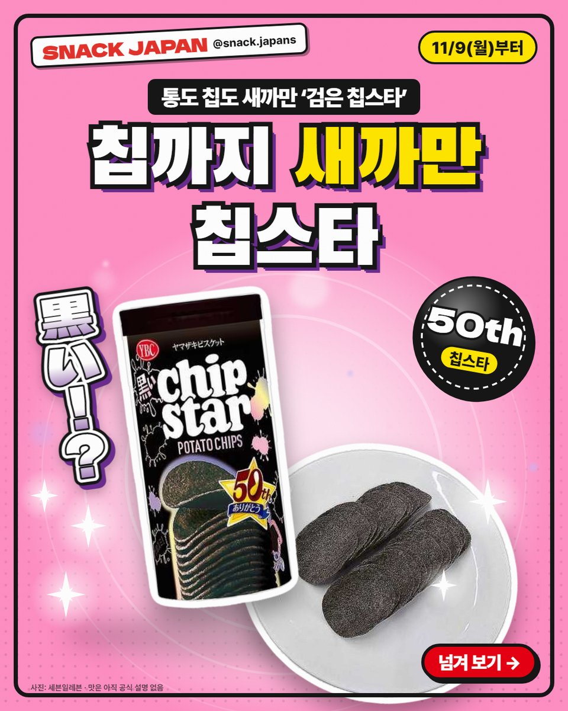
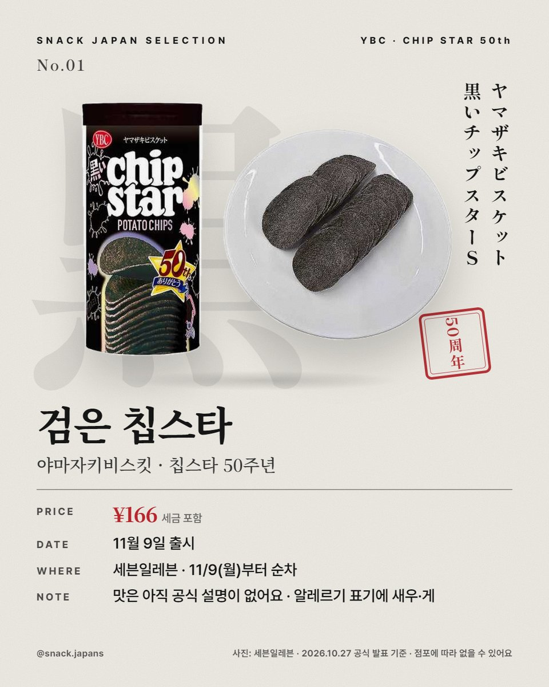
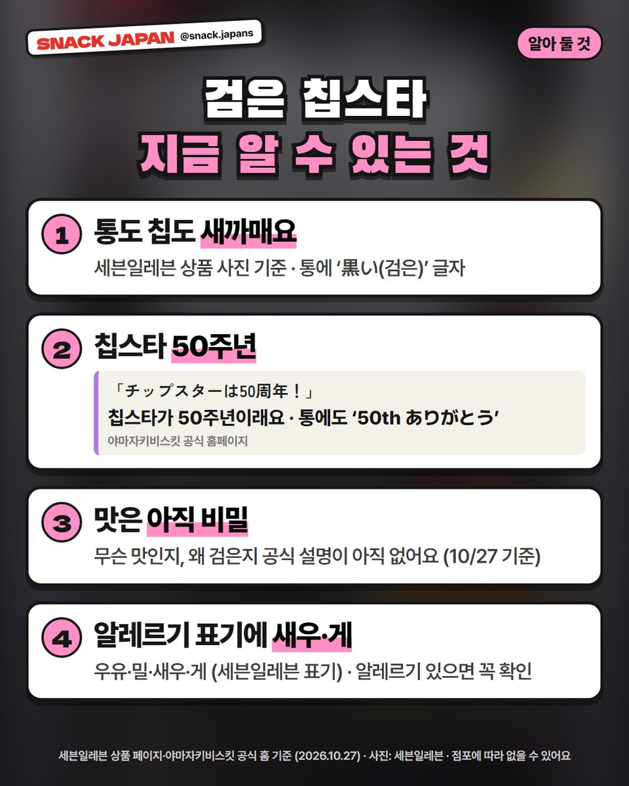
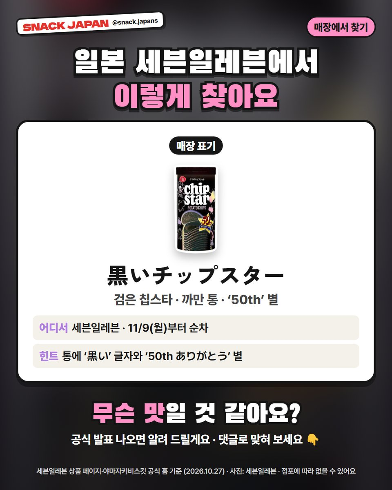

일본 세븐일레븐 검은 칩스타 출시, 통도 칩도 새까만 칩스타 50주년
11/9부터 순차! 통도 칩도 새까만 '검은 칩스타'가 일본 세븐일레븐에 나와요. 맛은 아직 비밀이에요.
통도 까맣고, 칩도 까만 칩스타?! ⚫
일본 감자칩 '칩스타'의 검은 버전 '검은 칩스타'가
11/9(월)부터 일본 세븐일레븐에 나와요.
세븐일레븐 상품 페이지 기준으로 정리해 볼게요!

1. 언제·어디서?
- 파는 곳: 일본 세븐일레븐
- 출시: 11/9(월)부터 순차
- 일본 이름: ヤマザキビスケット 黒いチップスターＳ
- 가격: 사진 카드에 정리해 뒀어요

2. 칩스타 50주년
야마자키비스킷 공식 홈에 「チップスターは50周年！」라고 나와 있어요.
검은 칩스타 통에도 '50th ありがとう(50주년 고마워요)'라고 적혀 있어요.

3. 맛은 아직 비밀
- 무슨 맛인지, 왜 까만지는 아직 공식 설명이 없어요 (10월 27일 확인 기준)
- 세븐일레븐 알레르기 표기: 우유·밀·새우·게
- 알레르기 있는 분은 꼭 확인하세요

4. 매장에서 찾는 법
- 매장 표기: 黒いチップスター
- 통에 '黒い' 글자와 '50th ありがとう' 별이 있어요
- 점포에 따라 없거나 늦게 들어올 수 있어요
총평
- 기준: 세븐일레븐 상품 페이지·야마자키비스킷 공식 홈, 10월 27일 확인
- 참고: 아직 나오기 전 상품이라 먹어 보지 않았어요
- 추천: 칩스타 좋아하는 분, 일본 편의점 신기한 과자 찾는 분
무슨 맛일 것 같아요?
공식 발표가 나오면 알려 드릴게요 ⚫
사진: 세븐일레븐